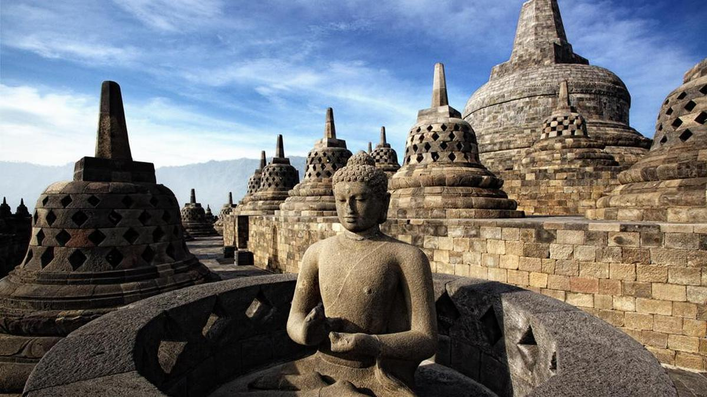
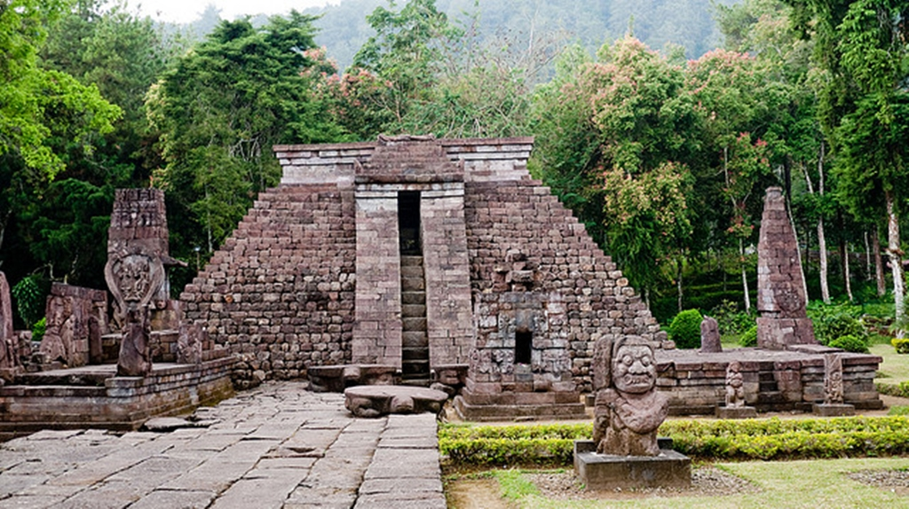
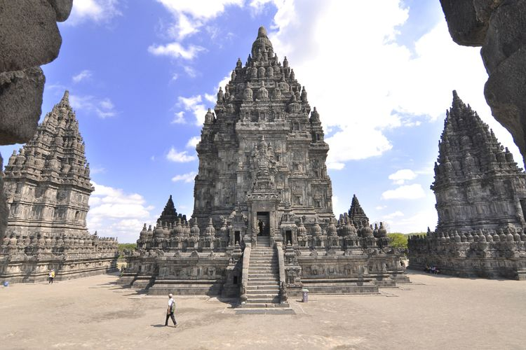

Candi Borobudur

Candi Borobudur adalah sebuah candi Buddha yang terletak di
Borobudur, Magelang, Jawa Tengah, Indonesia. Candi ini
terletak kurang lebih 100 km di sebelah barat daya Semarang,
86 km di sebelah barat Surakarta, dan 40 km di sebelah barat
laut Yogyakarta.
Candi Sukuh

Candi Sukuh adalah sebuah kompleks candi Hindu Hindu yang
secara administrasi terletak di wilayah Desa Berjo, Kecamatan
Ngargoyoso, Kabupaten Karanganyar, Jawa Tengah
Candi Prambanan

Candi Prambanan atau Candi Roro Jonggrang adalah kompleks
candi Hindu terbesar di Indonesia yang dibangun pada abad ke-9
masehi. Candi ini dipersembahkan untuk Trimurti, tiga dewa
utama Hindu yaitu dewa Brahma sebagai dewa pencipta, dewa
Wisnu sebagai dewa pemelihara, dan dewa Siwa sebagai dewa
pemusnah.